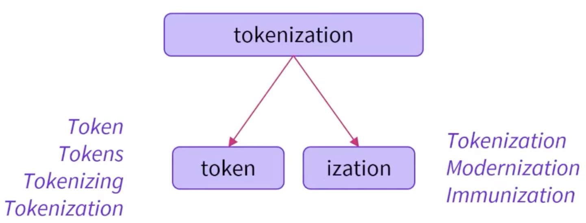
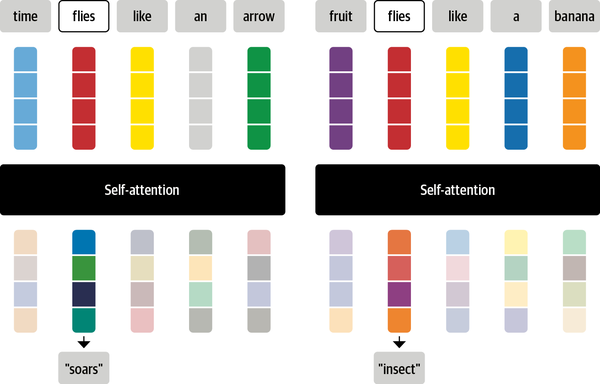
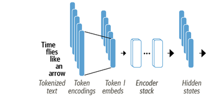
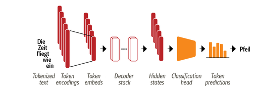
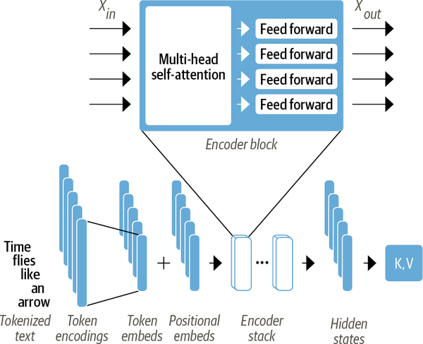
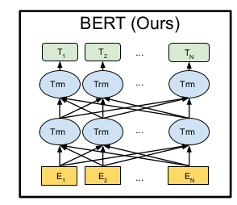
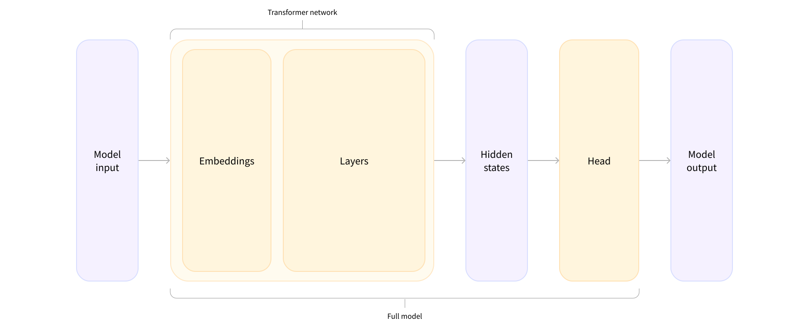
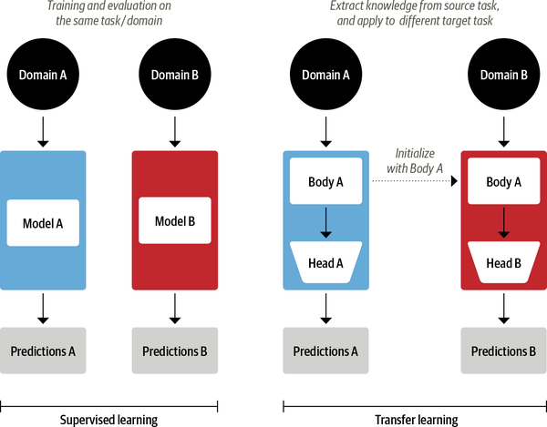

Session 4: The Encoder
CUSO WS on Large Language Models
2025-09-03
Today: Afternoon
- Part I: Advanced NLP
- Advanced Tokenization
- Contextualized Embeddings
- Part II: Intro to Transformers - The Encoder
- The Transformer Architecture
- The Huggingface Ecosystem
- Fine-tuning a Transformer Model
Tokenization
Issues with simple word tokenization
Consider the following words:
“national”, “nationalism”, “nationalist”, “nationalize”
What are potential issues with simple word tokenization here?
Any ideas how to solve these issues?
Solution: Subword Tokenization
Source: ü§ó LLM Course
Which advantages do you see with subword tokenization?
Different Tokenizers
Source: ü§ó LLM Course
How does it work? (roughly)
- Start with small vocabulary of characters and special tokens
- Map them in the training data (e.g. “w ##o ##r ##d”)
- Combine most frequent pairs (BPE) or unexpectedly frequent ones, given constitutive terms (WordPiece)
- Stop when you reach your desired vocabulary size
Note that this works better for some languages than for others
Special Tokens
[CLS]: Represents the entire input sequence[SEP]: Separates different segments of text[PAD]: Used for padding sequences to the same length[UNK]: Represents unknown or out-of-vocabulary words[MASK]: Used for masked language modeling tasks
Contextualized Embeddings
The following slides are based Tunstall, Von Werra, and Wolf (2022), Ch.2.
Issues with Classic Embeddings

Issues with Classic Embeddings
Contextual Meaning
Sentence a: Time flies like an arrow
vs.
Sentence b: Fruit flies like a banana
How could we represent the different meanings?
Contextualized Embeddings

Contextualized Embeddings
Contextual Meaning
Sentence a: Time flies like an arrow
vs.
Sentence b: Fruit flies like a banana
How do you infer the different meanings?
Attention Mechanism: Intuition
Source: Tunstall, Von Werra, and Wolf (2022), Ch. 2
Solution: Weighted Average
\[x'_i = \sum_{j=1}^{n} w_{ij} x_j\]
Weighted average of all input embeddings
- \(x'_i\): Contextualized embedding of token \(i\)
- \(x_j\): Embedding of token \(j\)
- \(w_{ij}\): Attention weight for token \(j\) with respect to token \(i\)
- \(n\): Number of tokens in the input sequence
Step 1: Create query, key, and value vectors
- Query: Represents the token itself
- Key: Represents the context of the token
- Value: Again the token itself (more later)
Step 2: Calculate the attention scores
The dot product of the query and key vectors gives us the attention scores/weights
What does the dot product of two vectors indicate?
Finalize: Normalize & take average
Step 3: Normalize the attention scores
The attention scores are normalized using the “softmax” function to ensure they sum to 1
Step 4: Multiply the normalized scores with the value vectors and sum them up
\[x'_i = \sum_{j=1}^{n} w_{ij} x_j\]
Attention Mechanism: Example

Attention in Practice
- Query, key, and value vectors are learned representations
- Attention calculated for each hidden layer
- Multiple attention ‘heads’ are used in parallel
- Outputs combined using another learned linear transformation
Positional Encodings
- We can also capture the position of each token in the sequence
- Similar approach:
- Create a vector for each position in the sequence
- Add these vectors to the token embeddings
- This allows the model to understand the order of tokens
Breaktime
Tutorial I
Tokenization, Attention & Inference
The Transformer Architecture

Some terminology
Encoder (e.g. BERT)
- Converts an input sequence of tokens into a sequence of embedding vectors
- Tasks: Text classification, named entity recognition, extractive question answering, …

Decoder (e.g. GPT) - TOMORROW!
- Uses a sequence of embedding vectors to iteratively generate an output sequence of tokens, one token at a time
- Tasks: Mainly text generation (e.g. Chatbot responses)

Transformers Overview
Encoder Block

Source: The Illustrated Transformer
The Encoder Architecture (e.g. BERT)
Source: Tunstall, Von Werra, and Wolf (2022), Ch. 2
The Encoder Architecture (e.g. BERT)
Source: Devlin et al. (2019)
Classification Heads
Source: ü§ó LLM Course Ch. 2
Classification Heads
Many Tasks, One Model
- Sequence Classification
- Masked Language Modeling
- Multiple Choice
- Token Classification
- Question Answering
Additional Considerations
- Dropout: prevent overfitting by randomly setting a fraction of input units to 0 during training
- Layer normalization: stabilize and accelerate training by normalizing the inputs to each layer
- Residual connections: add input to output (bypass layers)
Training a Transformer
What is “Training” ?
- Remember from ML course: Training is the process of optimizing a model’s parameters on a specific task using labeled data.
- In regression framework, this is called fitting the model to the training data.
Three Essential Steps
- Forward pass: The process of passing input data through the model to obtain predictions.
- Loss: A measure of how well the model’s predictions match the ground truth.
- Backward pass: The process of updating model parameters based on the loss.
Full Training vs. Fine-Tuning
- Read this short explainer
- Form groups of 2-3
- Alternate explaining to each other:
- the difference between pre-training and fine-tuning
- how does training a transformer from scratch work?
- how does fine-tuning work? How do the task and the model differ in this process?
- Collect two benefits and drawbacks of each approach.
Transfer Learning/Fine-Tuning
Tunstall, Von Werra, and Wolf (2022), Fig. 1-7
More on Fine-tuning
The Huggingface Ecosystem
The Model Hub
Datasets
Tutorial II
Fine-tuning a Transformer Model
Notebook